npm全称
node package manager
node包管理工具，增删查改
网址---https://www.npmjs.com/
什么是 NPM
npm 之于 Node.js ，就像 pip 之于 Python， gem 之于 Ruby， pear 之于 PHP 。
npm 是 Node.js 官方提供的包管理工具，他已经成了 Node.js 包的标准发布平台，用于 Node.js 包的发布、传播、依赖控制。
npm 提供了命令行工具，使你可以方便地下载、安装、升级、删除包，也可以让你作为开发者发布并维护包。
为什么要使用 NPM
npm 是随同 Node.js 一起安装的包管理工具，能解决 Node.js 代码部署上的很多问题，常见的场景有以下几种：
允许用户从 npm 服务器下载别人编写的第三方包到本地使用。
允许用户从 npm 服务器下载并安装别人编写的命令行程序到本地使用。
允许用户将自己编写的包或命令行程序上传到 npm 服务器供别人使用。
npm 的背后，是基于 couchdb 的一个数据库，详细记录了每个包的信息，包括作者、版本、依赖、授权信息等。它的一个很重要的作用就是：将开发者从繁琐的包管理工作（版本、依赖等）中解放出来，更加专注于功能的开发。
NPM 使用介绍
NPM是随同NodeJS一起安装的包管理工具，能解决NodeJS代码部署上的很多问题，常见的使用场景有以下几种：
- 允许用户从NPM服务器下载别人编写的第三方包到本地使用。
- 允许用户从NPM服务器下载并安装别人编写的命令行程序到本地使用。
- 允许用户将自己编写的包或命令行程序上传到NPM服务器供别人使用。
由于新版的nodejs已经集成了npm，所以之前npm也一并安装好了。同样可以通过输入 "npm -v" 来测试是否成功安装。命令如下，出现版本提示表示安装成功:
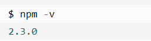
如果你安装的是旧版本的 npm，可以很容易得通过 npm 命令来升级，命令如下：
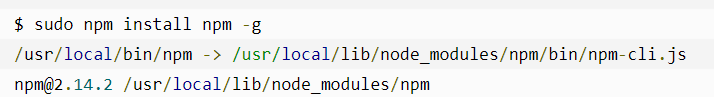
如果是 Window 系统使用以下命令即可：
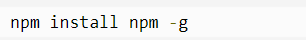
使用淘宝镜像的命令：
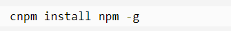
如何使用 NPM
安装
npm 安装 Node.js 模块语法格式如下：
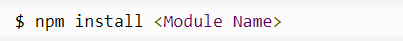
以下实例，我们使用 npm 命令安装常用的 Node.js web框架模块 express:
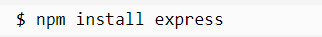
安装好之后，express 包就放在了工程目录下的 node_modules 目录中，因此在代码中只需要通过 require('express') 的方式就好，无需指定第三方包路径。
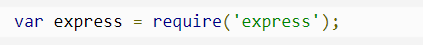
npm 不需要单独安装。在安装 Node 的时候，会连带一起安装 npm 。但是，Node 附带的 npm 可能不是最新版本，最后用下面的命令，更新到最新版本。
如果是 Window 系统使用以下命令即可：
也就是使用 npm 安装自己。之所以可以这样，是因为 npm 本身与 Node 的其他模块没有区别。
然后，运行下面的命令，查看各种信息。
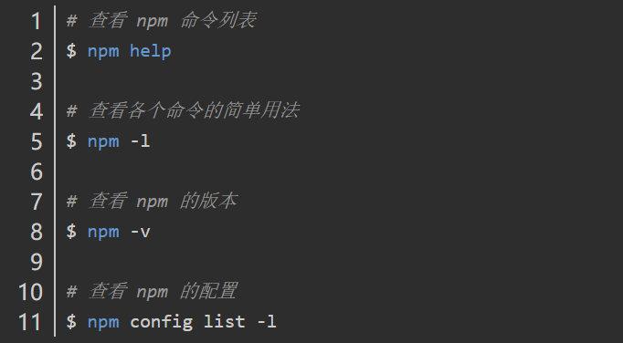
使用
npm init
npm init用来初始化生成一个新的 package.json 文件。它会向用户提问一系列问题，如果你觉得不用修改默认配置，一路回车就可以了。如果使用了 -f（代表force）、-y（代表yes），则跳过提问阶段，直接生成一个新的 package.json 文件。
Package.json 属性说明 name - 包名。 version - 包的版本号。 description - 包的描述。 homepage - 包的官网 url 。 author - 包的作者姓名。 contributors - 包的其他贡献者姓名。 dependencies - 依赖包列表。如果依赖包没有安装，npm 会自动将依赖包安装在 node_module 目录下。 repository - 包代码存放的地方的类型，可以是 git 或 svn，git 可在 Github 上。 main - main 字段指定了程序的主入口文件，require('moduleName') 就会加载这个文件。这个字段的默认值是模块根目录下面的 index.js。 keywords - 关键字npm set
npm set用来设置环境变量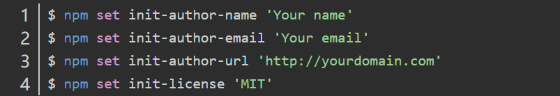
上面命令等于为 npm init 设置了默认值，以后执行 npm init 的时候，package.json 的作者姓名、邮件、主页、许可证字段就会自动写入预设的值。这些信息会存放在用户主目录的 ~/.npmrc文件，使得用户不用每个项目都输入。如果某个项目有不同的设置，可以针对该项目运行 npm config
npm info
npm info命令可以查看每个模块的具体信息。比如，查看 underscore 模块的信息上面命令返回一个 JavaScript 对象，包含了 underscore 模块的详细信息。这个对象的每个成员，都可以直接从 info 命令查询
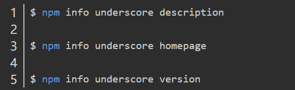
npm search
npm search命令用于搜索 npm 仓库，它后面可以跟字符串，也可以跟正则表达式。npm list
npm list命令以树形结构列出当前项目安装的所有模块，以及它们依赖的模块。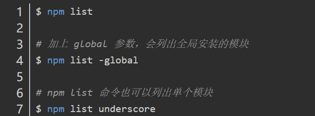
npm install
使用 npm 安装包的命令格式为：
npm [install/i] [package_name]本地模式和全局模式
npm 的包安装分为本地安装（local）、全局安装（global）两种，从敲的命令行来看，差别只是有没有-g而已，比如
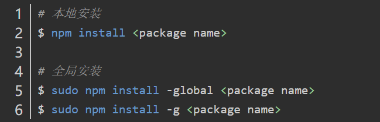
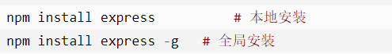
安装不同版本
install 命令总是安装模块的最新版本，如果要安装模块的特定版本，可以在模块名后面加上
@和版本号。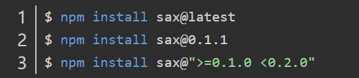
dependencies 依赖-生产环境
这个可以说是我们 npm 核心一项内容，依赖管理，这个对象里面的内容就是我们这个项目所依赖的 js 模块包。下面这段代码表示我们依赖了 markdown-it 这个包，版本是 ^8.1.0 ，代表最小依赖版本是 8.1.0 ，如果这个包有更新，那么当我们使用 npm install 命令的时候，npm 会帮我们下载最新的包。当别人引用我们这个包的时候，包内的依赖包也会被下载下来
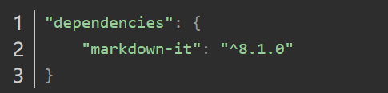
devDependencies 开发依赖-开发环境
在我们开发的时候会用到的一些包，只是在开发环境中需要用到，但是在别人引用我们包的时候，不会用到这些内容，放在 devDependencies 的包，在别人引用的时候不会被 npm 下载。
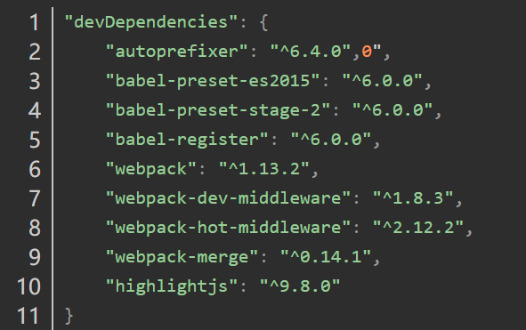
当你有了一个完整的 package.json 文件的时候，就可以让人一眼看出来，这个模块的基本信息，和这个模块所需要依赖的包。我们可以通过 npm install 就可以很方便的下载好这个模块所需要的包。